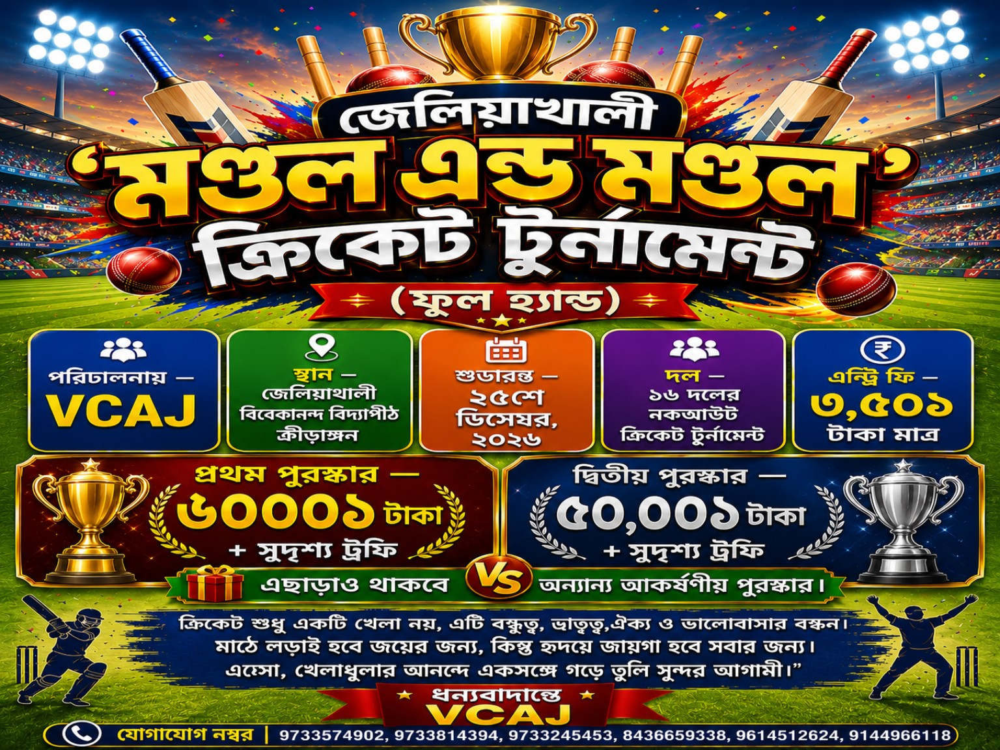

VIVEKANANDA CRICKET ASSOCIATION OF JELIAKHALI • KNOCKOUT TOURNAMENT
জেলিয়াখালী 'মন্ডল এন্ড মন্ডল' ক্রিকেট টুর্নামেন্ট
16-team knockout tournament hub — Live Score, Knockout Bracket, Player Records, Fielding Stats এবং Awards।
Format16Team Knockout
Rounds4R16 → QF → SF → Final
ScoringLiveBall-by-ball
Records∞Season-wise archive
টুর্নামেন্টের প্রধান অংশ
Live Match
Firebase real-time dataLive match data loading…